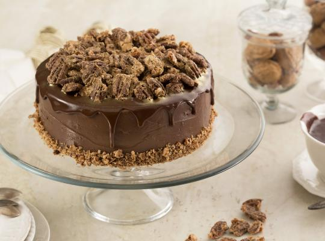

ingredientes
INGREDIENTES
300 g de pão de ló de chocolate cortado em 3 partes
Calda:
150 g de MOÇA® Leite Condensado
300 ml de água
Recheio e cobertura:
800 g de NESTLÉ® Creme de leite 25% UHT
150 g de NESTLÉ® Chocolate em Pó 32% cacau
50 g de açúcar refinado
10 ml de extrato de baunilha
Nozes carameladas:
150 g de nozes pecan inteiras
25 g de clara de ovo
10 ml de água
1 g de canela em pó
100 g de açúcar refinado
Ganache ao leite:
100 g de NESTLÉ® Chocolate ao Leite
50 g de NESTLÉ® Creme de leite 25% UHT

Modo de preparo
Massa:
Corte o pão de ló em três partes e reserve.
Calda para molhar o bolo:
Misture todos os ingredientes e reserve.
Recheio e Cobertura:
Misture os ingredientes e leve ao micro-ondas por 20 minutos mexendo a cada 5 minutos, deixe esfriar totalmente e leve à geladeira por 1 hora.
Nozes carameladas:
Misture as nozes com a clara e a água, logo misture o açúcar em a canela e leve e incorpore com as claras passadas nas claras.
Espalhe em uma assadeira e leve ao forno pré aquecido a 160°C por 20 minutos mexendo a cada 5 minutos, deixe esfriar, reserve.
Ganache ao leite:
Derreta o Chocolate ao Leite NESTLÉ® de acordo com as instruções da embalagem, misture com o Creme de Leite NESTLÉ®. Coloque em um saco de confeitar e reserve.
Montagem da torta:
Intercale camada de massa embebida na calda com 300g do recheio em cada camada, cubra toda a torta com o restante do recheio e disponha as nozes no topo, deixando um espaço para fazer o escorrido de ganache. No topo de o bolo no canto, corte o saco com o Ganache ao leite e fazer o escorridoMassa:
Corte o pão de ló em três partes e reserve.
Calda para molhar o bolo:
Misture todos os ingredientes e reserve.
Recheio e Cobertura:
Misture os ingredientes e leve ao micro-ondas por 20 minutos mexendo a cada 5 minutos, deixe esfriar totalmente e leve à geladeira por 1 hora.
Nozes carameladas:
Misture as nozes com a clara e a água, logo misture o açúcar em a canela e leve e incorpore com as claras passadas nas claras.
Espalhe em uma assadeira e leve ao forno pré aquecido a 160°C por 20 minutos mexendo a cada 5 minutos, deixe esfriar, reserve.
Ganache ao leite:
Derreta o Chocolate ao Leite NESTLÉ® de acordo com as instruções da embalagem, misture com o Creme de Leite NESTLÉ®. Coloque em um saco de confeitar e reserve.
Montagem da torta:
Intercale camada de massa embebida na calda com 300g do recheio em cada camada, cubra toda a torta com o restante do recheio e disponha as nozes no topo, deixando um espaço para fazer o escorrido de ganache. No topo de o bolo no canto, corte o saco com o Ganache ao leite e fazer o escorrido